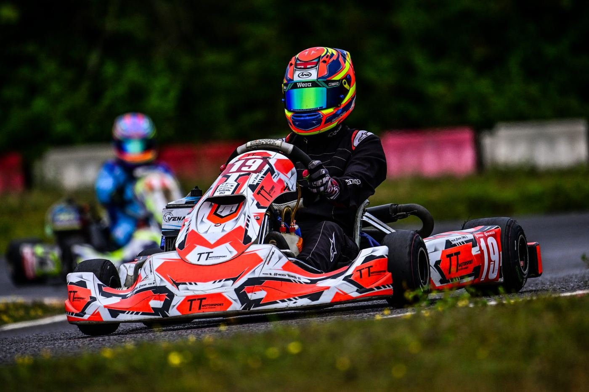

Start karting
You have watched a race, or your child has asked. This is what actually happens next, what it costs, and who to ask.
The short version
You do not need a licence, a race entry or even a kart to make a start. Forest Edge runs pre-ARKS sessions on every practice day, and they exist precisely so that someone who has never driven a racing kart can find out whether they like it.
Come to a practice day, talk to people in the paddock, and watch a session. Nobody at a kart club minds being asked how it works. Most of them were stood exactly where you are.
- Watch a dayAny race or practice day. Gates open at 07:00.
- Drive a pre-ARKS sessionNo licence needed. £70, or £60 once you are a member.
- Pass the ARKS testThe written and on-track test for a Motorsport UK licence.
- Join and enter£70 a season, then £65 a race day.

How old do you have to be
- BambinoFrom 6Not a championship class at Forest Edge, but Bambino drivers are welcome in the pre-ARKS practice sessions.
- CadetFrom 8Honda Cadet and Rotax Cadet. Where most drivers here start.
- JuniorFrom around 13Rotax Inter and Junior Rotax.
- SeniorFrom 16Senior Rotax, 177 Rotax, 177 Masters, KZ2, Superkart and 250 Mono.
Ages are set by Motorsport UK and vary a little by class. The 2026 Karting Yearbook is the authority. There is no upper age limit, and 177 Masters exists for drivers who would rather race their own generation.
What it costs
The club side is the predictable bit.
Everything the club charges is on the right, and it does not change through the season. A first practice day costs you £70 and nothing else.
The kart is the part that varies, and it varies enormously. A used cadet package costs a fraction of a new senior one, and plenty of people race competitively on equipment bought second hand. Rather than quote you a number that will be wrong, the honest answer is to come and ask in the paddock, where people will tell you what they paid and what they wish they had bought instead.
You will also need a helmet, race suit, gloves, boots and a rib protector, all to the standards in the Motorsport UK yearbook. Buy the helmet new. Everything else can sensibly be second hand.
What Forest Edge charges
- Race dayMember
- £65Non-member £75
- Practice dayMember
- £60Non-member £70
- Annual membership
- £70Per season
- Extra family member
- £50Per person
- Reserved pit space
- £100Per season
- Transponder hire
- £15Per weekend
- Electric hook-up
- £20Per weekend
Member rates apply once your annual membership is active on Alpha Timing.
The licence
The ARKS test
is the gate.
To race for points anywhere in the UK you need a Motorsport UK competition licence, and the route to a first one is the ARKS test: a written paper on the flags and the rules, and an on-track assessment.
Forest Edge has its own ARKS examiner. Peter Bryceson books and runs tests at the circuit, so you do not need to go elsewhere for it.
Drivers under 18 also need a completed Motorsport UK parental consent form before they sign on.

Before you come
On the day
Gates open at 07:00, race control opens for signing-on at 08:00, and the first session is at 09:00. There is no online booking for practice: pay at race control and collect your wristband.
Finding it
The circuit is on MOD ground off the A303 at Barton Stacey, a quarter of a mile down the lane past the Raymond Browns sign. Set your sat-nav to SO21 3BF.
Two firm rules
No tobacco products anywhere on site, and no dogs, by order of the Ministry of Defence. Please sort the dog out before you travel: the club has no discretion on it.